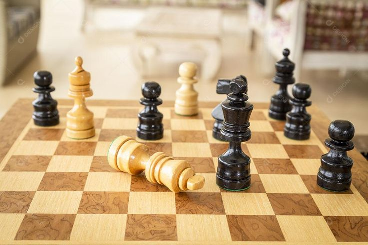

I
I
MAURÍCIO
I
Apresentação:
Eu sou Maurício, meu apelido é Samurai e por ventura meu git também, aqui deixo meu portifólio para visualização de quem desejar. Falando sobre mim, comecei a ter afinidade com o computador aos 6 anos de idade, aos 11 estava em um curso desses que vao se anunciar nas escolas, la aprendi o minimo de HTML e agora no curso técnico do Colegio ULBRA São Lucas aprimorei mais ainda meu conhecimento. a seguir para ter mais detalhes do que faço e de quem eu sou,apresento meus hobbys e gostos:
I
Internet

Tenho certa inteligencia e experiencia com tecnologia e websites, desde os 6 anos nos computadores, como disse anteriormente, criou uma boa afinidade com tudo que envolva tacnologia
I
Auto-didata
Sou muito Autodidata, desde criancinha aprendo as coisas só de ler e pesquisar, videos no youtube e etc, se contar a memoria fotografica que eu tenho que também é muito forte
I
Fut, Baska e etc...

Sou ÒTIMO em esportes, desde pequeno jogo futebol, basquete, volei, handebol e muitos outros.
I
Xadez e jogos de tabuleiro

Amo e sou muito bom em jogos de tabuleiro, isso me fez desenvolver paciencia e pensamento, criticidade e outros aspectos
I
Bagual

Não ha muito oque dizer, curto muito a cultura gaucha e uma roda de chimarrão
I
I
Especialidades